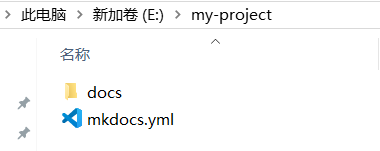
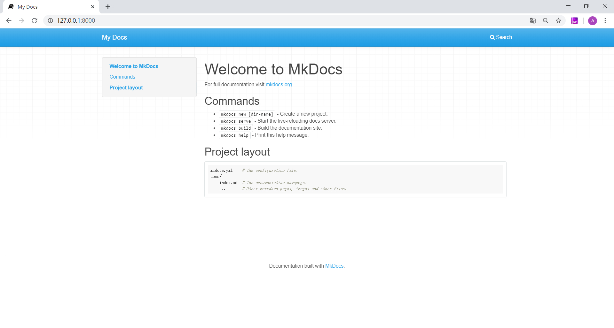
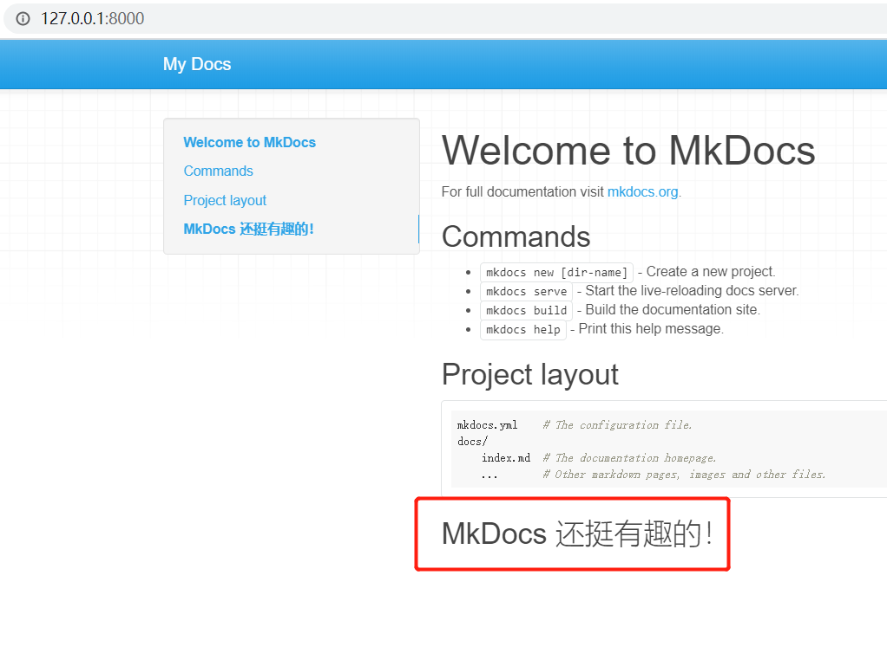
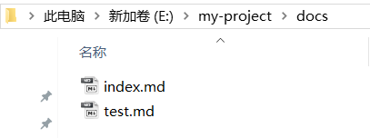
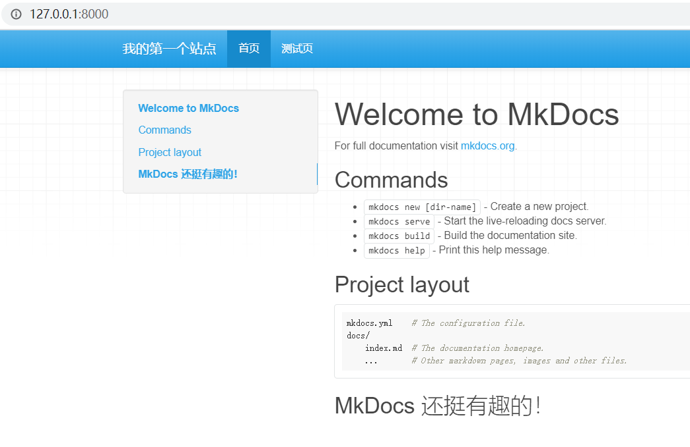

新建项目
首先选择好将项目文件储存在哪个磁盘，然后在该磁盘路径下执行命令。比如，想要把项目文件都放在 E 盘的话，就在 E 盘路径下执行以下命令：
mkdocs new my-project
这里的my-project即为你的项目名称，如果你的项目名称为my-blog，就可以执行mkdocs new my-blog命令。
结果如下：

最后生成了一个名为my-project的文件夹，如下图所示：

下面解释下my-project文件夹中每个文件的作用：
mkdocs.yml：此为配置文件，文档的结构、主题都可以在此设置。docs文件夹：撰写的 Markdown 文档都放在这个文件夹内。index.md：默认首页。
到此，一个新项目就创建好了~
启动服务
MkDocs 包含了一个内建的服务器，可以在本地预览当前文档。在项目文件夹下打开命令提示符，执行mkdocs serve命令就可以启动内建服务器，比如，之前在 E 盘新建了项目my-project，则在my-project路径下执行mkdocs serve就行，如下图：

执行成功后，在浏览器打开 http://127.0.0.1:8000/,就可以看到页面的样子啦！如下图：

此时页面上所展示的内容就是index.md里默认的首页内容，可以自行更改~我们来修改一下看看效果。首先在index.md里添加一些内容并保存，如下图：

然后 http://127.0.0.1:8000/ 会自动刷新，就可以看到修改后的结果啦！

添加页面
现在添加第二个页面。这一步其实非常简单，只需要将你撰写好的 Markdown 文档，放到docs文件夹下即可。这里，我用了一个test.md文件作为测试，把它放在了docs文件夹下。

这时 http://127.0.0.1:8000/ 已经自动刷新可以看见效果了：

但是这个页面还比较潦草，我们可以简单配置一下。打开mkdocs.yml配置文件，更改如下：
site_name: 我的第一个站点
nav:
- 首页: index.md
- 测试页: test.md
site_name为站点名称，nav用来设置导航栏，一行代表一个导航，其语法格式为- 导航名称: 对应的 Markdown 文件。
将更改保存后，再来看一下效果吧~

可以看到站点名称和导航栏名称都已经按照我们的设置更改了。你可以按照上述方法，将自己撰写的 Markdown 文件依次添加到站点里，这样，一个网站就初步搭建好了。
生成站点
在my-project路径下，打开命令提示符执行mkdocs build命令，如下图：

完成后，my-project下会多一个site文件夹，生成的html文件就全在里面啦。但是注意，site里面的文件在本地是不能正常跳转的，需要部署上线才能正常运行。